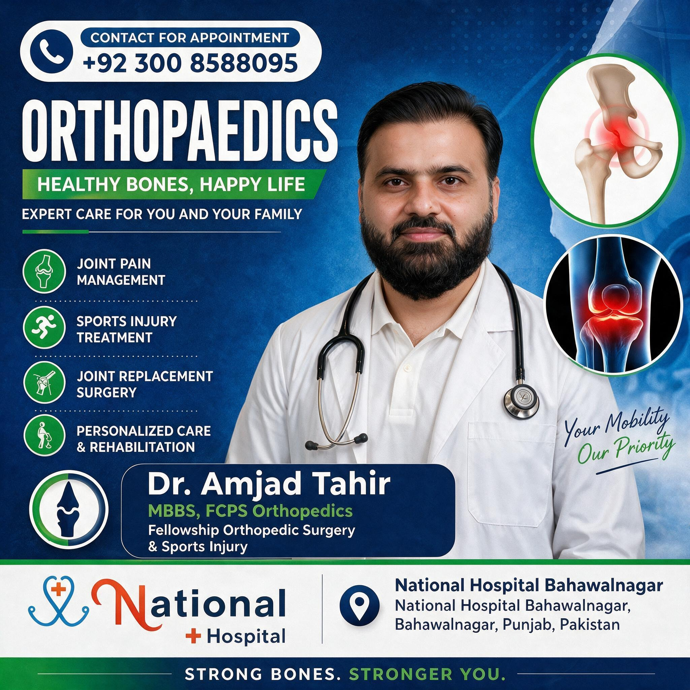
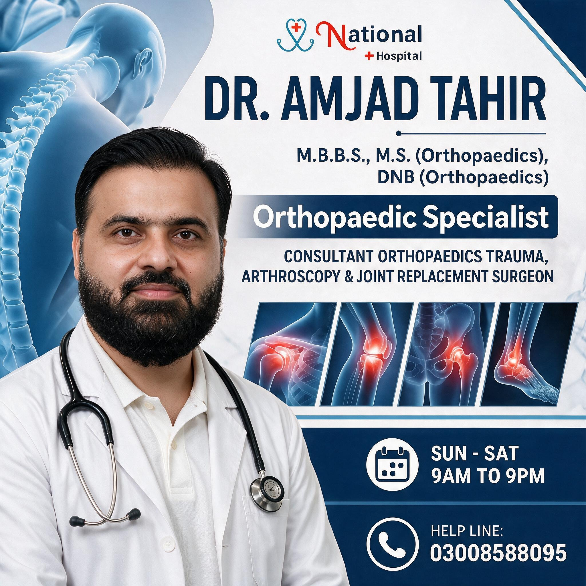

Joint Replacement
Evaluation and surgical care for damaged joints requiring replacement.

Consult Dr. Amjad Tahir
MBBS, FCPS (Orthopedics)
Orthopedic Surgeon
Expert Orthopaedic Care. Every Step of the Way.
Compassionate Care. Advanced Treatment. Better Recovery.
About
Dr. Amjad Tahir is a highly qualified Orthopedic Surgeon (MBBS, FCPS - Orthopedics) practicing at National Hospital, Bahawalnagar. With extensive training in joint replacement, trauma care, spine treatment, and sports injury management, he is dedicated to helping patients regain mobility, reduce pain, and return to an active, healthy lifestyle.
Known for his patient-first approach, Dr. Tahir combines advanced surgical techniques with compassionate, personalized care — guiding every patient through diagnosis, treatment, and full recovery.
Featured
Full campaign posters — shown complete, nothing cropped.


Services
Evaluation and surgical care for damaged joints requiring replacement.
Prompt care for fractures and orthopedic trauma injuries.
Assessment and treatment for spine-related and back pain conditions.
Care for ligament, tendon, and musculoskeletal sports-related injuries.
Post-treatment and post-surgical recovery guidance.
Consultation for arthritis and general bone and joint problems.
Orthopedic evaluation, imaging review, and treatment planning.
Why Choose
FCPS-certified orthopedic surgeon with specialized training in complex bone and joint conditions.
Every patient is treated with empathy, respect, and clear communication throughout their treatment journey.
Use of modern, minimally invasive surgical methods for faster recovery and less pain.
Backed by National Hospital Bahawalnagar's modern infrastructure and diagnostic support.
From diagnosis to surgery to post-operative rehabilitation — comprehensive care at every step.
Successful treatment outcomes across joint replacement, trauma, and sports injury cases.
Prompt attention for fractures, trauma, and urgent orthopedic conditions.
Patients are fully informed about diagnosis, treatment options, risks, and recovery expectations.
FAQs
Dr. Tahir treats a wide range of orthopedic conditions including joint problems, fractures, spine and back pain, sports injuries, arthritis, and other bone and muscle disorders. See the full Services section for details.
No referral is needed. You can directly book an appointment by calling 0300 8588095 or through the hospital.
Please bring any previous medical records, X-rays, MRI/CT scan reports, current medications list, and your CNIC/ID.
If you're experiencing persistent joint pain, stiffness, reduced mobility, or pain that doesn't improve with medication and physiotherapy, a consultation with Dr. Tahir can help determine if surgery is necessary. Many cases are managed with non-surgical treatment first.
Yes, joint replacement is a well-established and commonly performed procedure with high success rates. Dr. Tahir will discuss the risks, benefits, and recovery process specific to your case.
Recovery varies by procedure and patient, but most patients begin walking with support within 1-2 days and return to normal activities within 6-12 weeks, with full recovery over a few months.
Yes. Sports injury treatment is available for anyone with ligament tears, tendon injuries, dislocations, or related musculoskeletal injuries — not just professional athletes.
Treatment depends on severity — ranging from medication, physiotherapy, and spinal injections to surgical options for severe or persistent cases. Dr. Tahir will recommend the most appropriate approach after evaluation.
Yes, Dr. Tahir provides prompt care for fractures and trauma cases, including complex and compound fractures.
You can call 0300 8588095 or visit National Hospital, Bahawalnagar directly.
Post-operative rehabilitation guidance is provided as part of your recovery plan. Dr. Tahir will advise on physiotherapy and follow-up care tailored to your procedure.
Yes, Dr. Tahir regularly treats elderly patients for arthritis, osteoporosis, and age-related joint and bone conditions.
Don't let joint pain, fractures, or back pain hold you back. Get expert orthopedic care from Dr. Amjad Tahir at National Hospital, Bahawalnagar.
National Hospital Bahawalnagar, Punjab, Pakistan
MBBS, FCPS (Orthopedics)
Orthopedic Surgeon
National Hospital

Obstetrician & Gynecologist — pregnancy care, PCOS, infertility & women's health.
View Full Profile
Consultant Gastroenterologist & Hepatologist — digestive and liver care.
View Full Profile
Neurosurgeon — brain, spine & nerve specialist.
View Full Profile